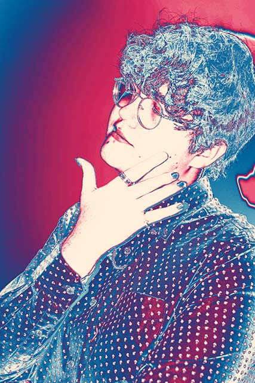
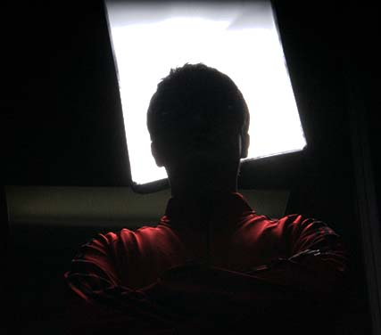

Margot Simard is a full time first year student in the Multimedia Program at the Lethbridge College focused on animation and design. Margot always enjoyed creating pieces of art.
In their spare time play video games as a form of inspiration for their animations and artworks. Their favorite parts of video games are the storytelling, art style, design, and mechanics that make the games so fun.
They’re inspired by video games and anime to evolve their creative style.


Music has been a huge part of Margot’s life and their favorite style of music is joy rush.
Joy rush is a mix of upbeat jazz and more modern beats to create a cheerful and overjoyed sensation.
An amazing example of joy rush would be Margot’s personal favorite of the genre would be “Back Pocket” by Vulfpeck.
Game soundtracks are also a huge favorite kind of music as they are most often designed around a game character to give off a feeling.
Some kinds of songs can make a villain eviller or add emphasis on sad parts of a game; this is Margot’s favorite kinds of music.
Although Margot spends most of their efforts in their program at the Lethbridge College, they spend a little bit of their time on making iconic video game or anime items.
One of the many projects is Pyramid Head’s butcher knife from Silent Hill, a 6 foot long and 1-foot-wide blade, he uses this colossal blade to pursue the player throughout the game.
Made of foam for light weight and ease to form, took Margot a entire week to create and another to paint to look like it is exactly from the game.
Margot’s next project is Pyramid Head’s helmet, and this time is made with real metal and welded in their garage, the estimated time to finish this progress is around 2 weeks.
Margot’s biggest inspiration for taking the Multimedia Program at the Lethbridge College is Corridor Digital on YouTube.
Corridor Digital have been making short stories and all kinds of videos regarding special FX and VFX as well as explaining the ins and outs of media and movie creation.
Corridor Digital is a informative and creative channel has recently launched a exclusive content website like Netflix but for their bigger projects.
Margot’s favorite series from Corridor Digital is SFX Artist Explained, in which they take looks at new and old movies and media and analyse the special effects used with famous special effect artists.
They also have a similar series where they go through the process of stunts in movies and shows with famous and world class stuntmen and stuntwomen.